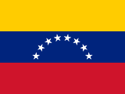
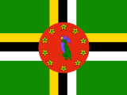

Dictamen del décimo hombre: no_publicar, y la Oficina lo concede. Las dos lecturas del panel anunciaban continuidad, y el escalón que sí importaría —el bloqueo de la mensajería— tiene tasa base cero: doce meses, 6.435 mediciones en Cuba, 295 anomalías y ningún bloqueo confirmado. La Oficina además había escrito un criterio defectuoso, que nombraba un ensayo inexistente. El hallazgo cubano es real y queda en el registro; la alerta no sale. Se abre panel nuevo sobre si el episodio de bloqueo web termina o se instala.
El operador estatal de telecomunicaciones de Cuba bloquearía al menos una de las tres plataformas de mensajería masiva —WhatsApp, Telegram o Signal— antes del 2026-10-11.
Confianza media · plazo 14 días · vence el 2026-10-11 · fuente única
El entorno informativo cubano se deterioró de manera medible en la segunda quincena de septiembre. La tasa de bloqueos de sitios confirmados por OONI pasó de 1,5 % de las mediciones el 14 de septiembre a 17,8 % el 18, con pico de 21,7 % el 24 y descenso a 9,1 % el 26. El salto es cubano y no de la plataforma de medición: el resto de la región se mantuvo entre 0 y 13 bloqueos confirmados diarios en el mismo período.
El contexto en que ocurre está acreditado. Cuba sufrió el 18 de septiembre su octavo apagón nacional de 2026, que dejó sin electricidad a más de nueve millones de personas [France24, 19/9/2026], y el 20 de septiembre se registraron protestas barriales en La Habana por cortes de más de treinta y seis horas y fallas en el acceso al agua [Infobae, 20/9/2026]. El órgano oficial reconoció la afectación de los servicios de telecomunicaciones y la atribuyó a la crisis energética [Granma, 20 y 24/9/2026], fuente interesada en la magnitud del dato y calificada en consecuencia.
Lo que la Oficina anuncia no es esa continuidad sino el escalón siguiente, que es el que tendría consecuencias: el bloqueo de la mensajería masiva. Hoy no está bloqueada, verificado contra los ensayos de OONI. Existe precedente propio: en julio de 2021, durante las protestas, WhatsApp registró anomalía en la totalidad de las mediciones cubanas. La combinación de apagones prolongados, protesta barrial y deterioro ya medido del acceso compone el cuadro en que ese precedente se produjo. Aun así la banda se emite baja: el deterioro actual es de sitios web y no de mensajería, la tasa viene cediendo desde el 24, y no se halló acto administrativo ni declaración que anuncie una medida sobre las plataformas.
Criterio de resolución, fijado al nacer la alerta. Se resuelve el 2026-10-12 o después, de forma mecánica. Se consulta la interfaz de agregación de OONI para probe_cc=CU, test_name en (whatsapp, telegram_test, signal), con since=2026-09-27 y until=2026-10-11, eje x por día. La alerta se cierra ACERTADA si en alguna jornada del período, para alguno de los tres ensayos, las mediciones con resultado de anomalía alcanzan o superan el 50 % del total de mediciones de ese ensayo ese día, con un mínimo de 30 mediciones en la jornada para que cuente. Se cierra NO OCURRIDA si ninguna jornada lo alcanza. Si la interfaz de OONI deja de responder o Cuba queda sin mediciones suficientes durante más de siete días del período, la alerta se cierra NO RESOLUBLE y así se anota en el marcador: no se estima el resultado.
Lectura con el marco DISARM
bloqueo confirmado — OONI confirma que un sitio o una aplicación está bloqueado en la red del país, por interferencia comprobada y no por caída.
No lo afirma: no prueba intención política: un bloqueo puede venir de una orden judicial, de una disputa comercial o de un error de la red. Haría falta el acto administrativo o la orden que lo dispone, y a quién alcanza. Cuando existe y es público, entra como hecho duro.
Taxonomía DISARM · DISARM Foundation · CC BY 4.0. FEMÓNOE la cita, no la modifica.
El décimo hombre
Sostiene que el operador estatal cubano no bloquearía ninguna de las tres plataformas de mensajería antes del 11 de octubre de 2026 —hecho casi con certeza no, 1 a 5 %—, y que la alerta, tal como está escrita, no debería nacer: el hecho anunciado no fue evaluado por ningún analista del panel, su banda se deriva por aritmética de un objeto medible distinto del que se publica, y su criterio de resolución no habría registrado el bloqueo real de julio de 2021 en sus tres días de mayor intensidad.
no publicar
La Oficina responde
La Oficina comprobó por su cuenta las tres objeciones que deciden, y las concede. Primera, y es un defecto de la Oficina y no una diferencia de criterio: el criterio de resolución nombraba el ensayo «telegram_test», que en OONI no existe. Consultado el 27/9/2026, devuelve cero mediciones sin error, mientras que el ensayo real, «telegram», registró 134 mediciones en septiembre.

